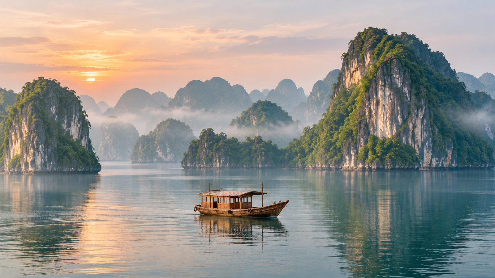

Vietnam, Kamboçya, Laos, Tayland Turu
Tur bilgileri
- Tarih
- 03.12.2026 – 13.12.2026
- Süre
- 11 gün
- Güzergâh
- Hanoi, Ha Long Bay, Ho Chi Minh (Saigon), Siem Reap, Luang Prabang, Bangkok
- Otel
- 5 Yıldız kalitesinde oteller ve 5 Yıldız cruise gemisi
- Vize
- Vizeli (Vietnam e-vize; Kamboçya ve Laos kapıda vize)
- Ulaşım
- Uçak, Cruise gemisi
- Havayolu
- Türk Hava Yolları, Yerel havayolları
Rota haritası
Şehir etiketine dokunun; programın o günü açılsın.
Fiyatlar
| İki Kişilik Odada Kişi Başı | $5.200 |
|---|---|
| Tek Kişilik Oda | $6.050 |
| İlave Yatak | $5.200 |
| 0 - 1 Yaş | $250 |
|---|---|
| 2 - 5 Yaş | $5.100 |
| 6 - 11 Yaş | $5.150 |
* Fiyatlar kişi başı, USD; tüm yurt dışı yerel vergiler dahildir.
* 10 gece / 11 gün, 4 ülke (9 gece konaklama: 8 gece otel, 1 gece Ha Long Bay cruise gemisi).
Tur programı
1. Gün: İstanbul – Hanoi
İstanbul Yeni Havalimanı Dış Hatlar Terminali Giden Yolcu Salonu "THY" bankosunda 15.05’te buluşuyoruz. Check-in, pasaport ve gümrük işlemleri sonrası THY'nin TK0252 seferi ile 18.05’te Vietnam'ın Hanoi şehrine uçuyoruz (9sa 30dk). (Uçuş saatleri havayoluna bağlı olarak değişebilir.)
2. Gün: Hanoi
Varış: 07.05. Varışı müteakip yapılacak şehir turumuzda Ho Chi Minh Mozolesi, Başkanlık Sarayı, Edebiyat Tapınağı, eskiden bir hapishane olan Hoa Lo, Eski Mahalle, Hanoi Tren Sokağı, Kral Ly Thai To Heykeli, Ngoc Son Tapınağı ve Hoan Kiem Gölü göreceğimiz yerler arasındadır. Serbest zamanın ardından akşam yemeği sonrası konaklama otelimizde. 5* Daewoo Hotel vb.
3. Gün: Hanoi – Ha Long Bay Cruise
Otelde alacağımız kahvaltının ardından UNESCO Dünya Mirası Listesi'nde yer alan ve dünyanın en etkileyici doğal oluşumlarından biri kabul edilen Ha Long Bay'e hareket ediyoruz (155 km). Varışımızın ardından cruise gemimize geçerek körfez yolculuğumuza başlıyoruz. Gemide alacağımız öğle yemeği eşliğinde binlerce kireçtaşı adacığı arasında eşsiz manzaraların tadını çıkarıyoruz. Programımız kapsamında mağara ziyaretleri, bambu teknesi veya kano aktiviteleri ve körfezin saklı koylarını keşfetme imkânı buluyoruz. Akşam yemeği sonrası konaklama cruise gemimizde. 5* The Au Co Cruise vb.
4. Gün: Ha Long Bay – Hanoi – Ho Chi Minh (Saigon)
Cruise gemisinde alacağımız kahvaltının ardından Hanoi Havalimanı’na hareket ediyoruz (180 km). Yerel havayollarıyla Saigon’a hareket ediyoruz. Akşam yemeği sonrası konaklama otelimizde. 5* Pullman Saigon Hotel vb.
5. Gün: Ho Chi Minh (Saigon)
Otelde alacağımız kahvaltının ardından Saigon’un karmaşasını geride bırakıp hayatın su üzerinde geçtiği Mekong Deltası kasabası olan My Tho'ya hareket ediyoruz (70 km). Mekong Nehri’ndeki yaşamı göreceğimiz tekne turu sırasında Hindistan cevizinden ürünler üreten bir ailenin atölyesini ziyaret etmek için adadaki bir köye çıkıyoruz. Sonrasında köy yolu boyunca meyve bahçelerinin gölgesinde yürüyerek yolculuğa devam ediyoruz. Nehir yaşamını daha fazla deneyimlemek için Mekong Nehri’nin bir kolu olan palmiyelerle gölgelenmiş kanal boyunca Vietnam’ın geleneksel sampan sandallarında kürek çekiyoruz. Turumuzun ardından akşam yemeği sonrası konaklama otelimizde.
6. Gün: Ho Chi Minh (Saigon) – Siem Reap (Kamboçya)
Otelde alacağımız kahvaltının ardından efsanevi tünelleri ziyaret etmek için Cu Chi Bölgesi’nin yemyeşil kırsalına hareket ediyoruz (45 km). 1948’de Fransız hava ve kara saldırılarına karşı barınak olarak başlatılan, 2. Çinhindi (Vietnam) Savaşı’nda Vietnamlı savaşçılar için iletişim yolları, depolama tesisleri, hastaneler ve yaşam alanları olarak hizmet veren Cu Chi Tünelleri’ni ziyaretin ardından dönüş yolunda Saigon’un en tarihi yerleri olan Bağımsızlık Sarayı’nı ve Savaş Müzesi’ni ziyaret ediyoruz. Gezimizin ardından geç öğle yemeği sonrası Siem Reap uçuşu için havalimanına hareket ediyoruz. Yerel havayolu ile saat 19.30’da Kamboçya’nın Siem Reap şehrine uçuyoruz. Varış: 20.30. Varışta vize ve pasaport işlemlerinin ardından konaklama için otelimize hareket ediyoruz. 5* Angkor Miracle Resort & Spa vb.
Önemli: Bugün uçak saatinden dolayı akşam yemeği yerine geç öğle yemeği alınacaktır.
7. Gün: Siem Reap – Angkor Thom – Ta Prohm – Angkor Wat – Siem Reap
Otelde alacağımız kahvaltının ardından yüzyıllardır Güneydoğu Asya’nın büyük bir bölümünü kontrol eden oldukça karmaşık bir medeniyetin geride bıraktığı eserleri görmek için yola çıkıyoruz. Önce büyük Khmer İmparatorluğu’nun son başkenti olan Angkor Thom’u ziyaret edip Fil Terası, Cüzzamlı Kral Terası ve Bayon Tapınağı'nı görüyoruz. 12. yüzyıldan kalan bu şaheser, Angkor Thom’un tam merkezinde yer alıp simetri ve ihtişamın arkeolojik bir harikasıdır. Ardından Tomb Raider filminin de çekildiği, ağaç köklerinin taş yapıları sarmaladığı Ta Prohm Tapınağı'na hareket ediyoruz. Ta Prohm ziyaretimizin ardından yükselen kuleleri ve olağanüstü kabartmalarıyla bir dünya mirası alanı olan Angkor Wat’a hareket ediyoruz. Angkor Wat, klasik Khmer mimarisinin zirvesidir ve Kamboçya’nın sembolü haline gelmiştir. Ulusal bayrakta yer alır ve Machu Picchu ve Büyük Piramit gibi diğer anıtlarla aynı seviyededir. Akşam yemeği sonrası konaklama otelimizde.
8. Gün: Siem Reap (Kamboçya) – Luang Prabang (Laos)
Otelde alacağımız kahvaltının ardından Kamboçya'nın "En Büyük Gölü" ve dünyanın en taşkın su yatağı olan Tonle Sap Gölü üzerinde geleneksel ahşap bir tekne ile gezintiye çıkıyoruz. Burada evlerinden okuluna, marketinden kilisesine kadar su üstünde olan Chong Kneas Köyü’nü ziyaret ediyor ve Tonle Sap Gölü üzerindeki Khmer yaşam tarzının örneklerini görüyoruz. Gezimizin ardından Siem Reap Havalimanı’na hareket ediyoruz. Yerel havayolu ile saat 17.05’te Laos’un Luang Prabang şehrine uçuyoruz. Varış: 18.30. Varışta vize ve pasaport işlemlerinin ardından akşam yemeği sonrası Luang Prabang etrafında yaşayan yerel kabilelerin yaptığı el işi tekstil ürünlerinin satıldığı büyük Gece Pazarı'nı geziyoruz. Konaklama otelimizde. 5* Pullman Hotel vb.
9. Gün: Luang Prabang – Bangkok
Otelde alacağımız kahvaltının ardından turumuza son derece ilginç ürünlere rastlayacağımız yerel sebze, meyve ve yiyeceklerin satıldığı Sabah Pazarı'nı gezerek başlıyoruz. Pazar gezisi sonrası eskiden Kraliyet Sarayı olarak kullanılan Ulusal Müze'yi göreceğiz. Müze’de Lao Kraliyet ailesinden kalma emanetler bulunmaktadır. Ardından Klasik Lao Mimarisi'nin en güzel örneği olarak bilinen Wat Xieng Thong Tapınağı’nı, Luang Prabang'ın en eski tapınağı ve bahçesindeki büyük Stupa ile dikkat çeken Wat Visoun'u ziyaret ediyoruz. Gezimizin ardından Luang Prabang Havalimanı’na hareket ediyoruz. Yerel havayolu ile 16.05’te Tayland’ın başkenti Bangkok’a uçuyoruz (1sa 30dk). Varış: 17.30. Akşam yemeği sonrası konaklama otelimizde. 5* InterContinental Bangkok Sukhumvit Hotel vb.
10. Gün: Bangkok
Otelde alacağımız kahvaltının ardından erken saatte Tayland'ın en sıra dışı pazarlarından biri olan Maeklong Demiryolu Pazarı’na hareket ediyoruz (80 km). Ortasından bir yolcu treni geçen pazarda, siren çaldığında tezgahların nasıl toparlandığına ve yol verdiğine tanık olacağız. Ardından Hindistan cevizi çiftliğini ziyaret edip Hindistan cevizi şekeri ve Hindistan cevizinden diğer ürünlerin nasıl yapıldığını öğreneceğiz. Sonrasında uzun kuyruklu Tay stili tekne ile su kanalları arasına kurulan otantik yerel yaşam manzarası eşliğinde yolculuğun keyfini çıkaracak ve 150 yıllık Yüzen Çarşı’yı ziyaret edeceğiz. Nehir üzerinde yerel kanolar ile kurulan açık pazarda alışveriş yapma imkanına sahip olacaksınız. Akşam yemeği sonrası konaklama otelimizde.
11. Gün: Bangkok – İstanbul
Otelden erken çıkışımızın ardından Bangkok Havalimanı’na hareket ediyoruz. THY’nin TK0065 seferi ile 10.20’de İstanbul’a uçuyoruz. Varış: 16.45. (Uçuş saatleri havayoluna bağlı olarak değişebilir.)
Fiyata dahil olanlar
- THY ile İstanbul – Hanoi / Bangkok – İstanbul gidiş-dönüş ekonomi sınıfı uçak bileti ve vergileri
- Yerel havayolları ile Hanoi / Ho Chi Minh arası tek yön ekonomi sınıfı uçak bileti ve vergileri
- Yerel havayolları ile Ho Chi Minh / Siem Reap arası tek yön ekonomi sınıfı uçak bileti ve vergileri
- Yerel havayolları ile Siem Reap / Luang Prabang arası tek yön ekonomi sınıfı uçak bileti ve vergileri
- Yerel havayolları ile Luang Prabang / Bangkok arası tek yön ekonomi sınıfı uçak bileti ve vergileri
- 8 gece 5* kalitesinde otellerde, 1 gece 5* cruise gemisinde konaklama (toplam 9 gece konaklama)
- 9 kahvaltı, 2 öğle yemeği, 8 akşam yemeği
- Programda adı geçen aktiviteler ve giriş ücretleri
- Programda adı geçen tüm transferler
- Türkçe rehberlik hizmeti
- Seyahat sigortası
- Tüm yurt dışı yerel vergiler
Fiyata dahil olmayanlar
- Vietnam vizesi ve hizmet bedeli - e-vize (50$, yeşil pasaport sahipleri vizeden muaftır)
- Kamboçya vizesi - kapıda vize (35$, yeşil pasaport sahipleri vizeden muaftır)
- Laos vizesi - kapıda vize (40$, yeşil pasaport sahipleri de vizeye tabidir)
- Dahil olduğu belirtilmeyen yemekler
- Diğer şehirlerden İstanbul'a iç hat bağlantı uçuşu ücreti
- Yurt dışı çıkış harcı
- Program dışı talep edilecek turlar
- Bahşişler
- Otel ekstraları (oda servisleri, telefon vb.)
- Programda dahil olduğu açıkça belirtilmemiş her türlü hizmet